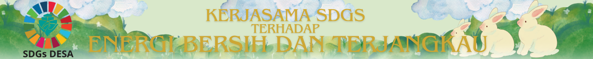
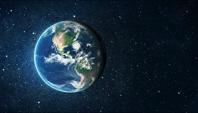

Dampak peningkatan akses terhadap SDGs energi bersih dan terjangkau bagi umum dunia akan memperbaiki kualitas hidup banyak orang, terutama di daerah - daerah terpencil serta mengurangi ketergantungan pada bahan bakar fosil yang seringkali tidak terjangkau dan merusak lingkungan. Transisi ke energi terbarukan seperti tenaga surya dan emisi gas rumah kaca yang diproduksi lebih sedikit berdampak positif terhadap kesehatan masyarakat. Dampak positif lainnya termasuk perlindungan lingkungan, karena energi bersih mengurangi emisi gas rumah kaca yang menyebabkan perubahan iklim, serta penciptaan lapangan kerja baru dan mendorong inovasi teknologi di sektor energi hijau.Keberlanjutan energi juga membantu dunia mengurangi ketergantungan pada energi fosil, meningkatkan ketahanan energi, dan menciptakan infrastruktur yang lebih efisien dan modern. Dengan demikian SDG 7 merupakan peran kunci dalam menciptakan dunia yang lebih berkelanjutan, sejahtera, dan mandiri secara ekonomi.